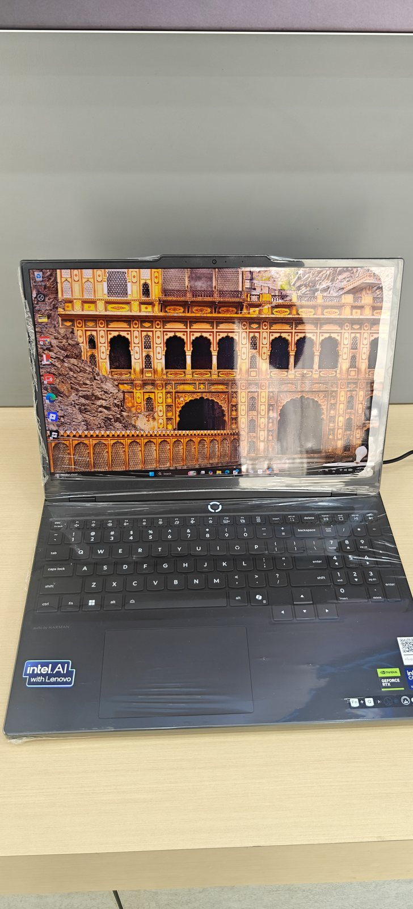

RMG Tech Solutions works with computer hardware daily — repair, sale and purchase, networking, and AMC. We see customers overpay for specs they don't need, or buy used machines with hidden problems. These guides are what we would tell you in person.

Free, honest hardware guidance from our workbench.
What specs actually matter for mock tests, PDF study material and online classes — and what's just marketing.
GUIDE-002When a used ThinkPad beats a new budget laptop, and the exact checks to run before handing over cash.
GUIDE-003Decoding i3 vs i5, processor generations, and why 8GB RAM is the real minimum in 2026.
GUIDE-004The 5-minute test we run on every laptop at the workshop — free tools, what the numbers mean, when to walk away.
GUIDE-005A built-in Windows command shows the battery's true remaining capacity in sixty seconds. No software needed.
GUIDE-006Why ₹3,500 of parts often beats ₹30,000 of new laptop — and the four cases where it doesn't.
GUIDE-007Which models are worth it, real Delhi market prices, and the BIOS password check almost nobody runs.
GUIDE-00816 cores for ₹12,000 sounds unbeatable. Here's what's actually inside one, and who should genuinely buy it.